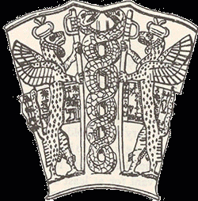
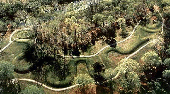
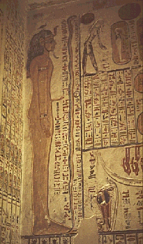

In China and the Far East- the symbol of the Dragon.
The Medical Caduceus, symbol of Thoth, healing, modern medicine that has saved billions of lives. The Caduceus is symbolic of the Ida and the Pingala of the Kundalini Serpent which transforms us into Gods. This is the healing energy within every human being.
Viking Ship

The Lord of the Tree of Life; Sumeria circa 2,500 BCE. The original "Tree of Life," depicting the DNA helix; also the Ida and the Pingala of the Kundalini Serpent.

Serpent Mound, Ohio USA
The USA is NOT a Christian Nation. In 1754, Benjamin Franklin, Satanist, used a snake, the first known political cartoon in an American newspaper. The serpent eventually found its way to one of our original flags, shown here.

Serpent on wall of Ancient Egyptian Temple- The serpent is seen everywhere in Ancient Egypt
Pyramid of the Feathered Serpent, Teotihuacan, Mexico